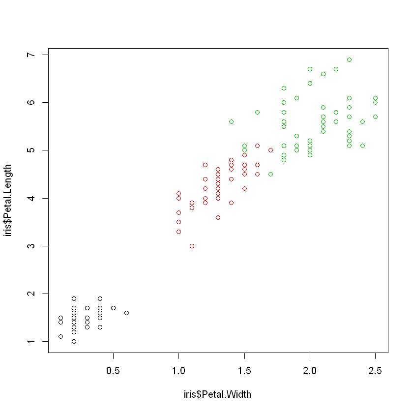
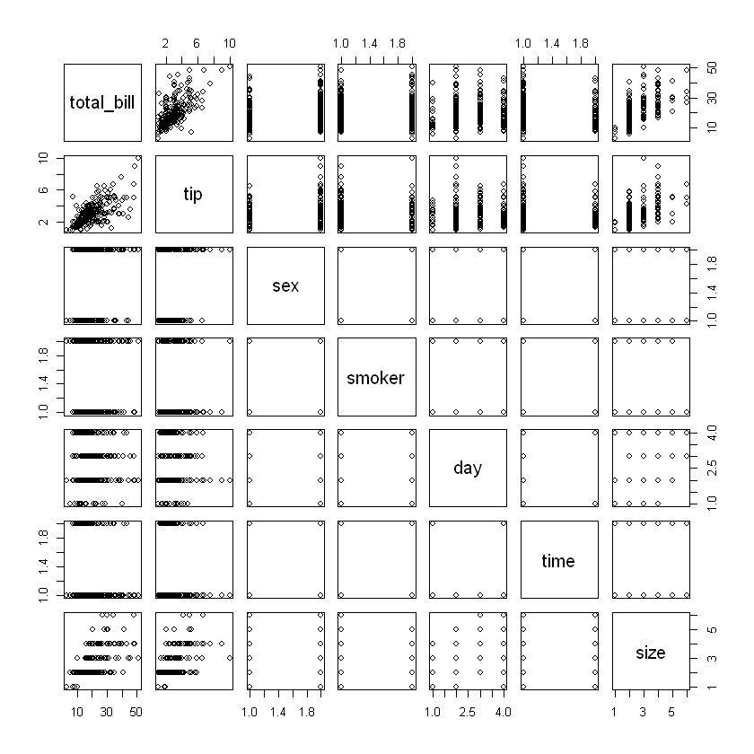
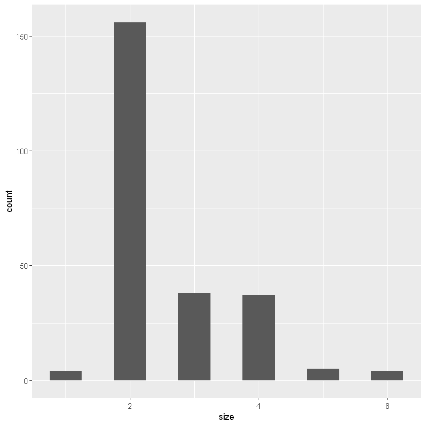
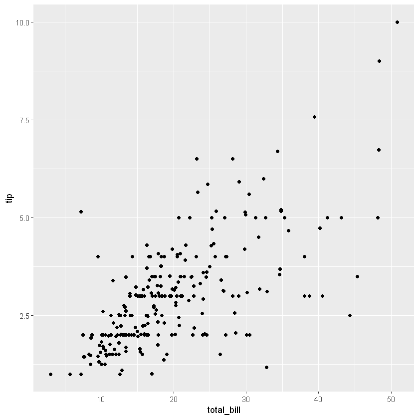
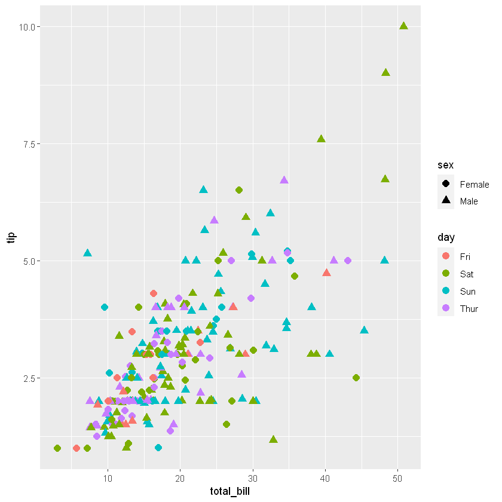

빅데이터 시각화 3주차 강의
str(iris)
'data.frame': 150 obs. of 5 variables:
$ Sepal.Length: num 5.1 4.9 4.7 4.6 5 5.4 4.6 5 4.4 4.9 ...
$ Sepal.Width : num 3.5 3 3.2 3.1 3.6 3.9 3.4 3.4 2.9 3.1 ...
$ Petal.Length: num 1.4 1.4 1.3 1.5 1.4 1.7 1.4 1.5 1.4 1.5 ...
$ Petal.Width : num 0.2 0.2 0.2 0.2 0.2 0.4 0.3 0.2 0.2 0.1 ...
$ Species : Factor w/ 3 levels "setosa","versicolor",..: 1 1 1 1 1 1 1 1 1 1 ...
head(iris,10)
| Sepal.Length | Sepal.Width | Petal.Length | Petal.Width | Species |
|---|---|---|---|---|
| 5.1 | 3.5 | 1.4 | 0.2 | setosa |
| 4.9 | 3.0 | 1.4 | 0.2 | setosa |
| 4.7 | 3.2 | 1.3 | 0.2 | setosa |
| 4.6 | 3.1 | 1.5 | 0.2 | setosa |
| 5.0 | 3.6 | 1.4 | 0.2 | setosa |
| 5.4 | 3.9 | 1.7 | 0.4 | setosa |
| 4.6 | 3.4 | 1.4 | 0.3 | setosa |
| 5.0 | 3.4 | 1.5 | 0.2 | setosa |
| 4.4 | 2.9 | 1.4 | 0.2 | setosa |
| 4.9 | 3.1 | 1.5 | 0.1 | setosa |
plot(iris)

plot(iris$Petal.Width,iris$Petal.Length,col=iris$Species)

install.packages('ggplot2')
also installing the dependencies 'isoband', 'rlang'
There are binary versions available but the source versions are later:
binary source needs_compilation
isoband 0.2.4 0.2.5 TRUE
ggplot2 3.3.3 3.3.5 FALSE
Binaries will be installed
package 'isoband' successfully unpacked and MD5 sums checked
package 'rlang' successfully unpacked and MD5 sums checked
The downloaded binary packages are in
C:\Users\MyCom\AppData\Local\Temp\RtmpIltyBd\downloaded_packages
installing the source package 'ggplot2'
library(ggplot2)
install.packages('dplyr')
library(dplyr)
also installing the dependencies 'ellipsis', 'glue', 'lifecycle', 'tibble', 'tidyselect', 'vctrs', 'pillar'
There are binary versions available but the source versions are later:
binary source needs_compilation
lifecycle 1.0.0 1.0.1 FALSE
tibble 3.1.1 3.1.4 TRUE
pillar 1.6.0 1.6.3 FALSE
dplyr 1.0.6 1.0.7 TRUE
Binaries will be installed
package 'ellipsis' successfully unpacked and MD5 sums checked
package 'glue' successfully unpacked and MD5 sums checked
Warning message:
"cannot remove prior installation of package 'glue'"Warning message in file.copy(savedcopy, lib, recursive = TRUE):
"C:\Users\MyCom\anaconda3\Lib\R\library\00LOCK\glue\libs\x64\glue.dll를 C:\Users\MyCom\anaconda3\Lib\R\library\glue\libs\x64\glue.dll로 복사하는데 문제가 발생했습니다: Permission denied"Warning message:
"restored 'glue'"
package 'tibble' successfully unpacked and MD5 sums checked
Warning message:
"cannot remove prior installation of package 'tibble'"Warning message in file.copy(savedcopy, lib, recursive = TRUE):
"C:\Users\MyCom\anaconda3\Lib\R\library\00LOCK\tibble\libs\x64\tibble.dll를 C:\Users\MyCom\anaconda3\Lib\R\library\tibble\libs\x64\tibble.dll로 복사하는데 문제가 발생했습니다: Permission denied"Warning message:
"restored 'tibble'"
package 'tidyselect' successfully unpacked and MD5 sums checked
Warning message:
"cannot remove prior installation of package 'tidyselect'"Warning message in file.copy(savedcopy, lib, recursive = TRUE):
"C:\Users\MyCom\anaconda3\Lib\R\library\00LOCK\tidyselect\libs\x64\tidyselect.dll를 C:\Users\MyCom\anaconda3\Lib\R\library\tidyselect\libs\x64\tidyselect.dll로 복사하는데 문제가 발생했습니다: Permission denied"Warning message:
"restored 'tidyselect'"
package 'vctrs' successfully unpacked and MD5 sums checked
package 'dplyr' successfully unpacked and MD5 sums checked
Warning message:
"cannot remove prior installation of package 'dplyr'"Warning message in file.copy(savedcopy, lib, recursive = TRUE):
"C:\Users\MyCom\anaconda3\Lib\R\library\00LOCK\dplyr\libs\x64\dplyr.dll를 C:\Users\MyCom\anaconda3\Lib\R\library\dplyr\libs\x64\dplyr.dll로 복사하는데 문제가 발생했습니다: Permission denied"Warning message:
"restored 'dplyr'"
The downloaded binary packages are in
C:\Users\MyCom\AppData\Local\Temp\RtmpIltyBd\downloaded_packages
installing the source packages 'lifecycle', 'pillar'
Attaching package: 'dplyr'
The following objects are masked from 'package:stats':
filter, lag
The following objects are masked from 'package:base':
intersect, setdiff, setequal, union
tips=read.csv('https://raw.githubusercontent.com/mwaskom/seaborn-data/master/tips.csv')
str(tips)
'data.frame': 244 obs. of 7 variables:
$ total_bill: num 17 10.3 21 23.7 24.6 ...
$ tip : num 1.01 1.66 3.5 3.31 3.61 4.71 2 3.12 1.96 3.23 ...
$ sex : Factor w/ 2 levels "Female","Male": 1 2 2 2 1 2 2 2 2 2 ...
$ smoker : Factor w/ 2 levels "No","Yes": 1 1 1 1 1 1 1 1 1 1 ...
$ day : Factor w/ 4 levels "Fri","Sat","Sun",..: 3 3 3 3 3 3 3 3 3 3 ...
$ time : Factor w/ 2 levels "Dinner","Lunch": 1 1 1 1 1 1 1 1 1 1 ...
$ size : int 2 3 3 2 4 4 2 4 2 2 ...
head(tips,10)
| total_bill | tip | sex | smoker | day | time | size |
|---|---|---|---|---|---|---|
| 16.99 | 1.01 | Female | No | Sun | Dinner | 2 |
| 10.34 | 1.66 | Male | No | Sun | Dinner | 3 |
| 21.01 | 3.50 | Male | No | Sun | Dinner | 3 |
| 23.68 | 3.31 | Male | No | Sun | Dinner | 2 |
| 24.59 | 3.61 | Female | No | Sun | Dinner | 4 |
| 25.29 | 4.71 | Male | No | Sun | Dinner | 4 |
| 8.77 | 2.00 | Male | No | Sun | Dinner | 2 |
| 26.88 | 3.12 | Male | No | Sun | Dinner | 4 |
| 15.04 | 1.96 | Male | No | Sun | Dinner | 2 |
| 14.78 | 3.23 | Male | No | Sun | Dinner | 2 |
plot(tips)

summary(tips)
total_bill tip sex smoker day time
Min. : 3.07 Min. : 1.000 Female: 87 No :151 Fri :19 Dinner:176
1st Qu.:13.35 1st Qu.: 2.000 Male :157 Yes: 93 Sat :87 Lunch : 68
Median :17.80 Median : 2.900 Sun :76
Mean :19.79 Mean : 2.998 Thur:62
3rd Qu.:24.13 3rd Qu.: 3.562
Max. :50.81 Max. :10.000
size
Min. :1.00
1st Qu.:2.00
Median :2.00
Mean :2.57
3rd Qu.:3.00
Max. :6.00
##`stat_bin()` using `bins = 30`. Pick better value with`binwidth`. 문제해결
# binwidth 추가하기
tips%>%ggplot(aes(size))+geom_histogram(binwidth = 0.5)

tips%>%ggplot(aes(total_bill,tip))+geom_point()
#산점도 그리기

tips%>%ggplot(aes(total_bill,tip))+geom_point(aes(col=day,pch=sex),size=3)
